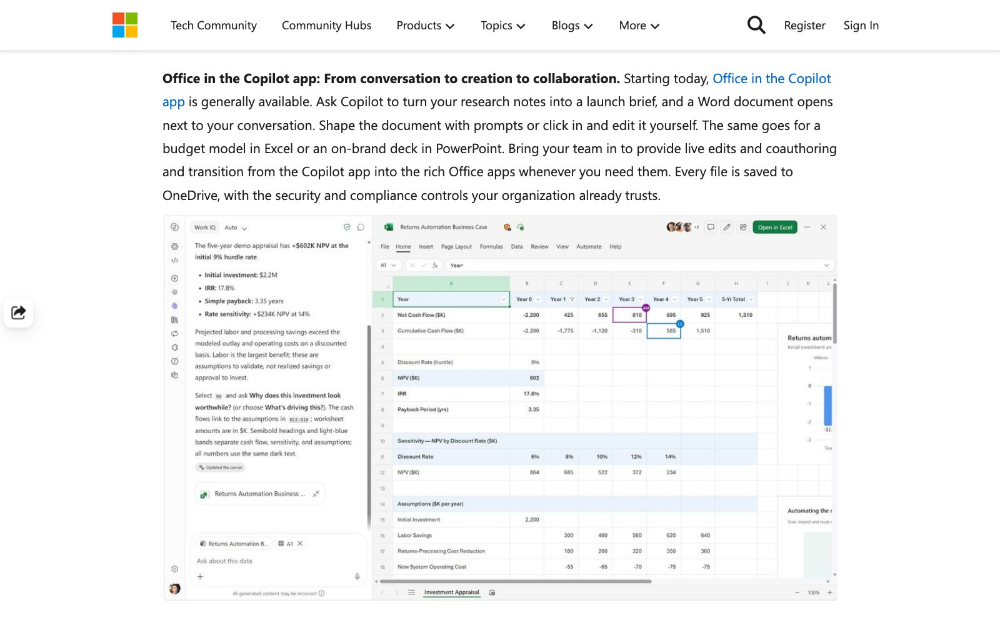
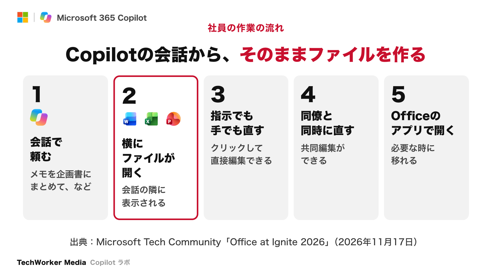
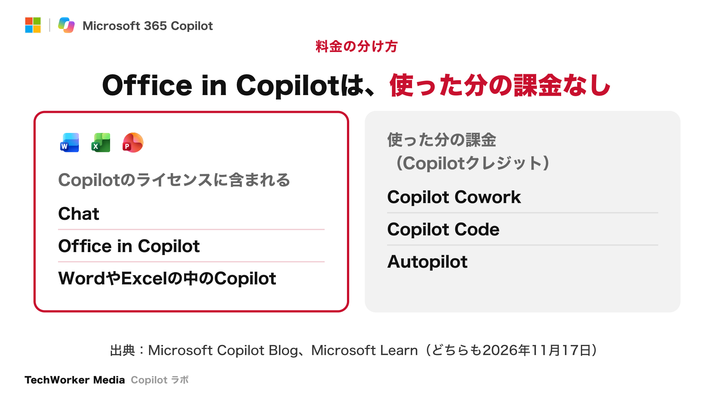
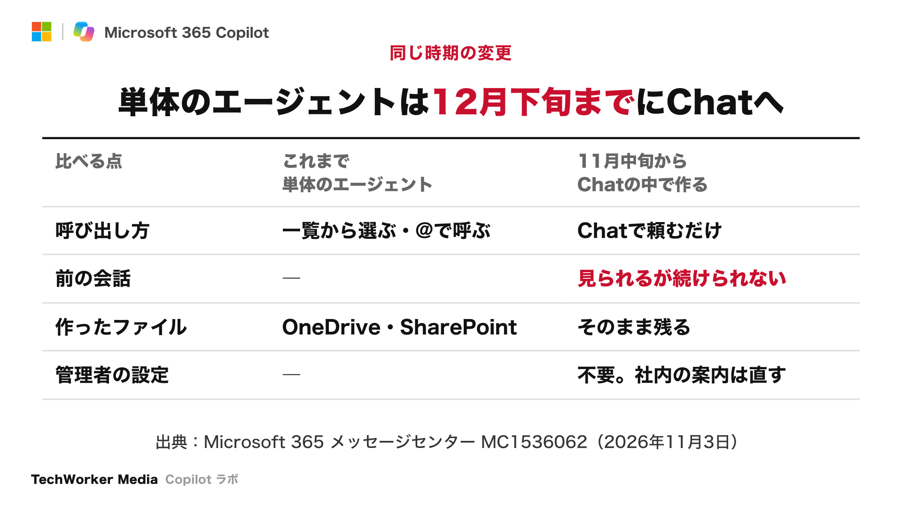
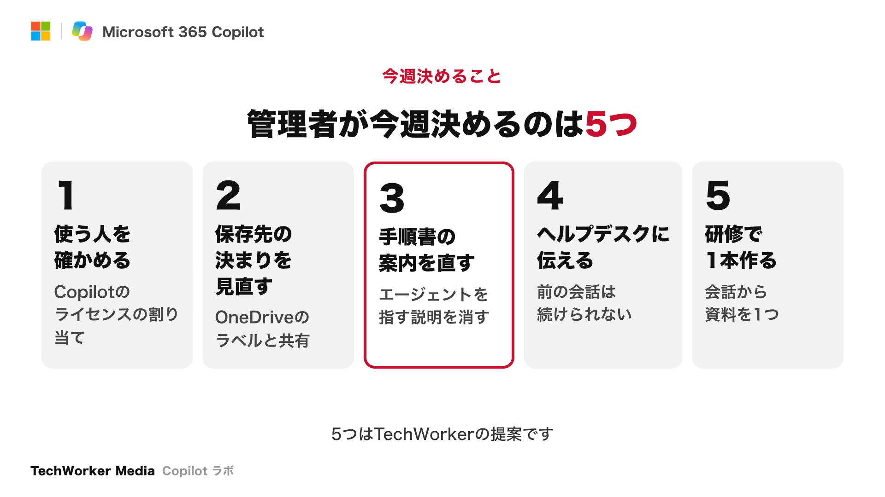

Office in Copilotは、Microsoft CopilotのアプリでWord・Excel・PowerPointのファイルを作って直せる機能です。2026年11月17日のMicrosoft Ignite 2026で、一般提供が始まりました。
- 料金：Microsoftは、Copilotのサブスクリプションのライセンスに含まれると書いています。使った分の課金（Copilotクレジット）はかかりません。
- 保存先：作ったファイルはOneDriveに保存されます。権限、秘密度ラベル、コンプライアンスの設定は最初から引き継がれます。
- 同じ時期の変更：単体のWord・Excel・PowerPointエージェントは、12月下旬までにChatの機能へ置き換わります。
Microsoftの発表と、メッセージセンターの告知2件を2026年11月25日に読みました。そのうえで、情シスとAI導入の担当が今週決めることをまとめます。
Office in Copilotとは何ですか？
Copilotに頼むと、会話の横にWord・Excel・PowerPointのファイルが開く機能です。指示でも手でも直せて、同僚と同時に編集できます。

出典：Microsoft Tech Community「Office at Ignite 2026: From apps to agentic system of work」の画面（2026年11月25日に撮影）
原文“Ask Copilot to turn your research notes into a launch brief, and a Word document opens next to your conversation. Shape the document with prompts or click in and edit it yourself.”
日本語訳調べたメモを発売の企画書にまとめるようCopilotに頼むと、会話の隣にWordの文書が開きます。文書は指示で整えることも、クリックして自分で直すこともできます。
画面の左がCopilotとの会話で、右に会話から作ったExcelのファイルが開いています。右上の「Open in Excel」で、いつものExcelのアプリに移れます。
発表から一般提供までの日付を、公式の発表と告知のとおりに並べました。
| 日付 | 出来事 | 出典 |
|---|---|---|
| 2026年10月9日 | Frontierに参加する会社向けに、ChatとCoworkで提供を開始 | Microsoft Tech Community |
| 2026年10月29日 | Office in Copilotの告知MC1530611を公開（11月10日に日程を更新） | メッセージセンター |
| 2026年11月3日 | 単体のWord・Excel・PowerPointエージェントの置き換えの告知MC1536062を公開 | メッセージセンター |
| 2026年11月17日 | Ignite 2026で一般提供を発表 | Microsoft Copilot Blog |
| 2026年11月中旬まで | 世界での一般提供の展開を終える予定（11月10日の更新時点の見込み） | MC1530611 |
| 2026年12月上旬から | 「Deferred release」の展開を開始する予定 | MC1530611 |
| 2026年12月下旬まで | 単体のエージェントの置き換えを終える予定 | MC1536062 |
出典：Microsoft Tech Community、Microsoft Copilot Blog、メッセージセンターの告知2件（2026年11月25日確認）。「Deferred release」の対象になるテナントは、告知に書かれていません
社員の作業はどう変わりますか？
Copilotとの会話から、ファイルを作って仕上げるまでを1つの画面で進められます。細かな作業が要るときは、いつものOfficeのアプリに移れます。

Microsoftが挙げている使い方は、次の3つです。
- Word：調べたメモから、発売の企画書を作ります。
- Excel：予算のモデルを作ります。
- PowerPoint：自社の体裁に沿った資料を作ります。
これまでも、WordやExcelの中でCopilotを使えました。新しいのは、Copilotのアプリでの会話からファイルを作り始められる点です。社員は会話で下書きを作り、同じ画面で直して、同僚に渡せます。
10月9日の先行発表では、ChatとCoworkの両方で使えると書かれていました。Microsoft Learnでは、Coworkは使った分の課金の機能に分けられています。違いは「Copilot Coworkとは」で解説しています。
追加の料金はかかりますか？
Microsoftは、Office in CopilotはCopilotのサブスクリプションのライセンスに含まれると書いています。Copilot Cowork、Copilot Code、Autopilotは、使った分の課金です。

原文“This is the only AI tool where you can create a PowerPoint deck or Excel spreadsheet without spinning a meter—all this value is already included in your Copilot subscription license.”
日本語訳使った分の課金なしで、PowerPointの資料やExcelの表を作れる唯一のAIツールです。この価値はすべて、Copilotのサブスクリプションのライセンスにすでに含まれています。
日本のMicrosoftの価格ページに載っている、Copilotのライセンスの料金です。
| 契約 | 料金（税抜・1ユーザー） | 条件 |
|---|---|---|
| Microsoft 365 Copilot（大企業向け） | 年払い：月4,497円相当 月払い：4,722円（年間契約） | 条件を満たすMicrosoft 365プランのライセンスが別に必要 |
| Microsoft 365 Copilot Business（アドオン） | 年払い：月3,148円相当 月払い：3,778円 | 対象のBusinessプランを使っている会社 |
| 同上のキャンペーン価格 | 年払い：月2,698円相当 | 2026年12月31日まで。初年度だけ。年間契約が必要 |
| 使った分の課金（Copilotクレジット） | 使った分 | Copilot Cowork、Copilot Code、Autopilotなど |
出典：Microsoft公式「Microsoft Copilot の価格」の大企業向け・ビジネス向けのページ（2026年11月25日確認）。価格に消費税は含まれません
年額は月額相当×12か月×人数で出します。大企業向けを100人で使うと年5,396,400円、Businessのアドオンを50人で使うと年1,888,800円です。キャンペーン価格なら、初年度は年1,618,800円になります。いずれも税抜で、前提のMicrosoft 365の費用は含みません。
注意が要るのは、無償のCopilot Chatだけを使う社員です。Office in Copilotを使えるかは、公式の発表に書かれていません。Microsoft Learnによると、単体のWord・Excel・PowerPointエージェントには、有料のMicrosoft 365 Copilotのライセンスが必要でした。契約ごとの違いは「Microsoft 365 Copilotの法人料金と契約」にまとめています。
人数を入れると、席の料金とクレジットの上限が月額と年額で出るExcelは、下の枠から受け取れます。
作ったファイルはどこに保存され、権限はどうなりますか？
ファイルはOneDriveに保存されます。Microsoftは、権限、秘密度ラベル、コンプライアンスの設定が最初から引き継がれると書いています。
原文“And because every file inherits Microsoft 365 permissions, sensitivity labels, and compliance controls from the start, your work stays protected as you collaborate.”
日本語訳どのファイルもMicrosoft 365の権限、秘密度ラベル、コンプライアンスの制御を最初から引き継ぎます。そのため、共同で作業しても仕事は守られます。
告知MC1530611はコンプライアンスの確認事項に4つの答えを書いています。
| 確認事項 | 答え | 告知の説明 |
|---|---|---|
| 顧客のデータの処理・保存・アクセスの仕方が変わるか | はい | Copilotの画面でOfficeのファイルを見て直せる。変更はOfficeのアプリに同期される |
| 顧客のデータに触れるAIの機能が増えるか、大きく変わるか | はい | Copilotが、Officeの文書の中身を読んで直せるようになる |
| 利用者に新しい使い方が増えるか | はい | CopilotのアプリでWord・Excel・PowerPointを作って直せる |
| 管理者が制御できるか | はい | 今のCopilotの設定とポリシーに従う。Entra IDのグループで割り当てを管理できる |
出典：MC1530611の「Compliance considerations」（2026年11月10日更新、2026年11月25日確認）
TechWorkerは、この引き継ぎを、今の共有の設定が新しく作った資料にもそのまま当たることだと読みます。OneDriveの共有の既定やラベルの付け方が緩いままなら、作った資料も同じ緩さで扱われます。点検の手順は「Microsoft 365 Copilot導入前のSharePoint権限棚卸し」にまとめました。
単体のWord・Excel・PowerPointエージェントはどうなりますか？
2026年11月中旬から12月下旬にかけて、Chatの中の作成と編集の機能に置き換わります。前の会話は見られますが、その会話で続きの作業はできません。

対象はMicrosoft 365 Copilotの利用者ごとのライセンス（USL）を持つ人です。告知MC1536062の要点は次のとおりです。
- 消える物：単体のエージェントは左の一覧とエージェントの検索から外れます。ピン留め、@での呼び出し、起動ができなくなります。
- 残る物：作ったファイルはOneDriveやSharePointの元の場所に残ります。権限と保持の設定もそのままです。
- 前の会話：見ることはできますが、単体のエージェントとの作業は続けられません。直すときは、Chatで新しい会話を始めます。
- 管理者の作業：設定も利用者の準備も要りません。利用者とヘルプデスクへの周知と、社内の案内の見直しを勧めています。
原文“Previous conversation history will remain available to view. Users will not be able to continue working with the standalone agents in those conversations.”
日本語訳前の会話の履歴は引き続き見ることができます。利用者はその会話で単体のエージェントとの作業を続けることはできません。
メッセージセンターの告知は、Microsoft 365 管理センターにログインして読む物です。TechWorkerは、告知を保存している公開の資料館で中身を確かめました。
管理者が設定することはありますか？
MC1530611では、管理者の作業は要らないとされています。そのうえで、利用者への周知と、今のCopilotの設定とポリシーの見直しを勧めています。
- 使える人の範囲：今のCopilotの設定とポリシーに従います。Entra IDのグループで割り当てを管理できると、告知に書かれています。
- 専用の設定：Office in Copilotだけをオン・オフする設定は、2026年11月25日の時点でMicrosoft Learnに見つかりませんでした。
- 展開の時期：11月10日に更新された告知では、世界での一般提供は11月中旬までに展開を終える予定でした。「Deferred release」は12月上旬に始まる予定です。
- 言語と日本の時期：日本語の画面への対応と、日本のテナントへの展開の時期は、公式の発表に書かれていません。
社内に案内を出す前に、情シスの担当者のアカウントで画面に出るかを確かめます。出ないときは、展開の途中か、ライセンスの対象外かを切り分けます。Ignite 2026のほかの発表は「Microsoft Ignite 2026のCopilotまとめ」にまとめています。
情シスが今週決めることは何ですか？
TechWorkerが提案する5つです。使う人、保存先の決まり、手順書の案内、ヘルプデスクへの周知、研修での1本目を決めます。

- 使う人を確かめる：Copilotのライセンスを割り当てた人と、無償のCopilot Chatだけの人を分けて一覧にします。
- 保存先の決まりを見直す：ファイルはOneDriveに保存されます。共有の既定と、秘密度ラベルの付け方を確かめます。
- 手順書の案内を直す：単体のエージェントを選ぶよう書いた社内の手順書を、Chatで頼む書き方に直します。告知MC1536062が勧めている作業です。
- ヘルプデスクに伝える：「前の会話の続きができない」という問い合わせが来ます。新しい会話で頼み直す、という答えを先に渡します。
- 研修で1本作る：会議のメモから資料を1つ作る練習を、研修の最初の課題にします。
社員が実際に使っているかは、使った人の割合で測ります。測り方と定着の進め方は「Microsoft Copilotが定着しない原因と対策」で解説しています。
Copilot で作るエージェントの例として、社員からの経費精算の質問に規程の該当箇所つきで答えるエージェントと問い合わせメールへの返信を社内の文例で下書きするエージェントの作り方を公開しています。Microsoft 365 Copilot を社内で使い続けるための研修のカリキュラムと進め方は、Copilot研修（法人向け）のページに載せています。
よくある質問
公式の発表には書かれていません。Microsoftは「Copilotのサブスクリプションのライセンスに含まれる」と書いています。Microsoft Learnによると、単体のWord・Excel・PowerPointエージェントには、有料のMicrosoft 365 Copilotのライセンスが必要でした。自社のテナントで、無償の利用者の画面を開いて確かめるのが確実です。
Microsoftは、使った分の課金なしでPowerPointの資料やExcelの表を作れると書いています。一方で、Copilot Cowork、Copilot Code、Autopilotは使った分の課金（Copilotクレジット）です。Coworkの中でファイルを作ったときの課金の扱いは、公式の発表に書かれていません。
OneDriveに保存されます。Microsoftは、権限、秘密度ラベル、コンプライアンスの設定が最初から引き継がれると書いています。
消えません。OneDriveやSharePointの元の場所に残り、権限と保持の設定もそのままです。前の会話は見られますが、その会話で続きの作業はできません。
Office in Copilotだけをオフにする設定は、2026年11月25日の時点でMicrosoft Learnに見つかりませんでした。告知MC1530611は、今のCopilotの設定とポリシーに従い、Entra IDのグループで割り当てを管理できると書いています。
次の一歩は何から始めればよいですか？
情シスの担当者が自分のアカウントでファイルを1つ作り、保存先と権限を確かめることから始めます。
- Copilotのアプリで、会議のメモからWordの文書を1つ作ります。
- OneDriveのどこに保存されたか、誰に共有されているか、ラベルが付いたかを確かめます。
- 単体のエージェントを案内している社内の手順書を探し、直す担当と期限を決めます。
TechWorkerの研修では、受講者の実際の業務1本について、Copilotで資料や表を作るところまで当日に仕上げます。30日後に、使った人の割合と1件にかかる時間を測って報告します。検討段階のご相談だけでも歓迎です。
出典と確認範囲
確認日：2026年11月25日。メッセージセンターの告知は管理センターへのログインが要るため、公開の資料館（Microsoft 365 Message Center Archive）で中身を確かめました。無償のCopilot Chatの利用者が使えるか、専用の管理設定、日本語の画面と日本での展開の時期は、公式の発表に書かれていません。TechWorkerのテナントでの動作は、本記事では確かめていません。情シスが決める5つはTechWorkerの提案です。
- Microsoft Copilot Blog「Copilot at Microsoft Ignite: Expanding what's possible with intelligence built for work」（2026年11月17日）
- Microsoft Tech Community「Office at Ignite 2026: From apps to agentic system of work」（2026年11月17日）
- Microsoft Tech Community「Introducing Office in the new Microsoft Copilot app」（2026年10月9日）
- Microsoft Learn「What is Microsoft Copilot?」（2026年11月17日更新）
- Microsoft Learn「Create files with Word, Excel, and PowerPoint Agents in Microsoft Copilot」（2026年11月4日更新）
- MC1530611「Office in Copilot brings the full power of Office into the Microsoft Copilot app」（2026年10月29日公開、11月10日更新）
- MC1536062「Changes to Word, Excel, and PowerPoint agents in Microsoft Copilot」（2026年11月3日）
- Microsoft「エンタープライズの生産性向上に AI を活用」（大企業向けの価格、2026年11月25日確認）
- Microsoft「ビジネス向け Microsoft Copilot」（一般法人向けの価格、2026年11月25日確認）